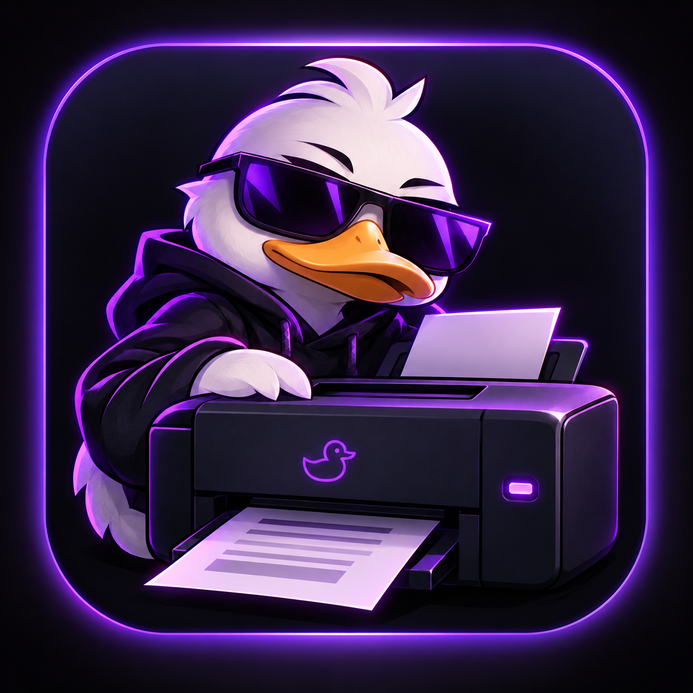

▣
Ducker Print
A modern Linux printing client for CUPS, IPP and network printers. Find, manage and print without the clutter.
v2.0.5 · LinuxDucker Suite is a collection of modern, focused Linux applications. Clean interfaces, useful utilities and a dark purple aesthetic — built for people who like their desktop under control.
# Ducker Suite $ ducker --status suite Ducker Suite platform Linux theme Purple / Dark status ● online $ ducker apps 01 Ducker Print installed 02 Ducker Tool installed 03 Ducker Keyboard ready $ _

Every Ducker app is designed around the same idea: useful first, clean second, unnecessary complexity never.
A modern Linux printing client for CUPS, IPP and network printers. Find, manage and print without the clutter.
v2.0.5 · LinuxA lightweight system utility for monitoring system resources, temperatures and important desktop information.
System UtilityA focused keyboard testing utility for Linux with a simple interface made for quick diagnostics.
DiagnosticsDucker keeps the interface focused while still giving you the controls you actually need.
Ducker Suite is made with Linux workflows in mind — from system utilities to everyday desktop tasks.
Designed around the way Linux users actually work: terminals, desktop apps, services and system tools.
Focused screens, strong hierarchy and a consistent visual language across the suite.
Focused applications that solve one problem instead of becoming another giant control center.
Explore the Ducker ecosystem and bring a little more control — and a little more purple — to your desktop.